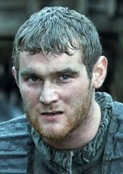
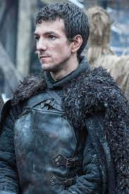
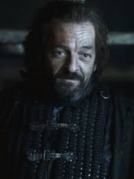

El Muro es una inmensa muralla de hielo que se extiende de este a oeste en el norte de Poniente y que separa los Siete Reinos de las tierras salvajes de más allá. Se extiende desde los Colmillos Helados en el oeste hasta la Bahía de las Focas en el este.
Guardia de la Noche
Lema: Soy el Vigilante de El Muro. Soy el fuego que arde contra el frío, la luz que trae el amanecer, el cuerno que despierta a los durmientes, el escudo que protege los Reinos de los Hombres. Entrego mi vida y mi honor a la Guardia de la Noche durante esta noche y todas las que estén por venir..
Ubicación: Muro de Hielo

La misión original de la Guardia de la Noche fue repeler a Los Otros, pero con el pasar del tiempo ha pasado a asegurar la protección del Muro contra los intentos de infiltración de los salvajes. A veces, la Guardia los detiene al sur del Muro en El Agasajo o "Más allá del Muro", en el Bosque Encantado.

Maestre Aemon: Tercer hijo del rey Maekar I Targaryen y Lady Dyanna Dayne. Sirvió como maestre en la Guardia de la Noche durante casi toda su vida. Murió a los ciento dos años, llegando a ser el hombre vivo más anciano de todo Poniente.

Benjen Stark: Hermano de Eddard y Lyanna. Es un hermano juramentado de la Guardia de la Noche, donde se desempeña como Primer Explorador, líder de los exploradores de la Guardia.: Hermano de Eddard y Lyanna. Un caminante blanco lo apuñala, no obstante, gracias a los "Hijos del bosque", el Stark volvió a la vida como un 'No-muerto' gracias a un pedazo de vidriagón

Othell Yarwyck: Primer constructor de la Guardia de la Noche. Hombre impasible, carente de imaginación y taciturno. Muere en la horca después de haber traicionado y matado a Jon Snow.

Alliser Thorne: Maestro de armas del Castillo Negro y encargado del adiestramiento de los reclutas de la Guardia de la Noche. El tono de su voz y su desprecio lo hace odiado por la mayoría de los reclutas de la Guardia. Muere en la horca acusado de alta traición cuando mata a Jon Snow.

Samwell Tarly: Joven de carácter inseguro, tímido, cobarde e incapaz de realizar cualquier actividad física, tiene un corazón amable y comprensivo y es inteligente y reflexivo, razones por las cuales el maestre Aemon lo toma cómo su mayordomo personal. Hijo mayor de Lord Randyll Tarly y de Lady Melessa Florent.su padre quedó decepcionado con el joven Sam al ver que este no poseía ninguna de las virtudes que él creía que eran necesarias para un buen heredero. Sabiendo que Sam sería el heredero al ser el primogénito, Lord Randyll amenazó con matarlo si no se unía a la Guardia de la Noche, de esa forma dejaría el camino libre a su hermano pequeño para ser el nuevo heredero. Es nombrado Gran Maestre de la corte del Rey Bran "El roto"

Eddison Tollett: Mejor conocido como Edd el Penas, es un mayordomo de la Guardia de la Noche. Ejerció como mayordomo personal de Lord Jeor Mormont y Lord Jon Snow hasta su traslado a Túmulo Largo. En el momento en el que Sam iba a ser asesinado por un caminante blanco, Edd le salvó la vida pero muere tras su heroica acción.

Grenn: Se convierte en amigo de Jon junto a otros reclutas del grupo. Es seleccionado para los exploradores cuando Ser Alliser Thorne cree que está listo para tomar el juramento. Es considerado por algunos como lento y torpe. Muere durante la batalla entre la Guardia de la Noche y los Salvajes capitaneados por Mayce Rayder

Pyp: Antes de llegar al Muro, Pyp había viajado por los Siete Reinos en compañía de unos mimos, es decir, se dedicaba al mundo de la comedia y la bufonería. Explorador de la Guardia de la Noche. Muere por una flecha disparada por Ygritte en la batalla de Castle Black

Yoren: "Cuervo errante" o reclutador para la Guardia. Intentó llevar a Arya Stark al Norte, pero murió luchando contra hombres de los Lannister que buscaban al fugitivo Beric Dondarrion